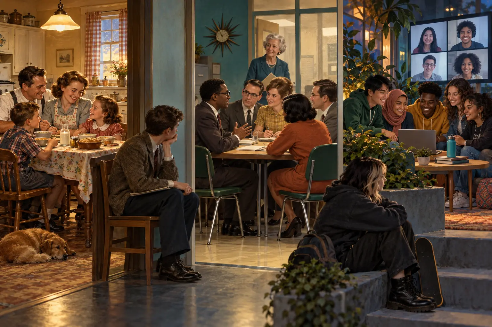
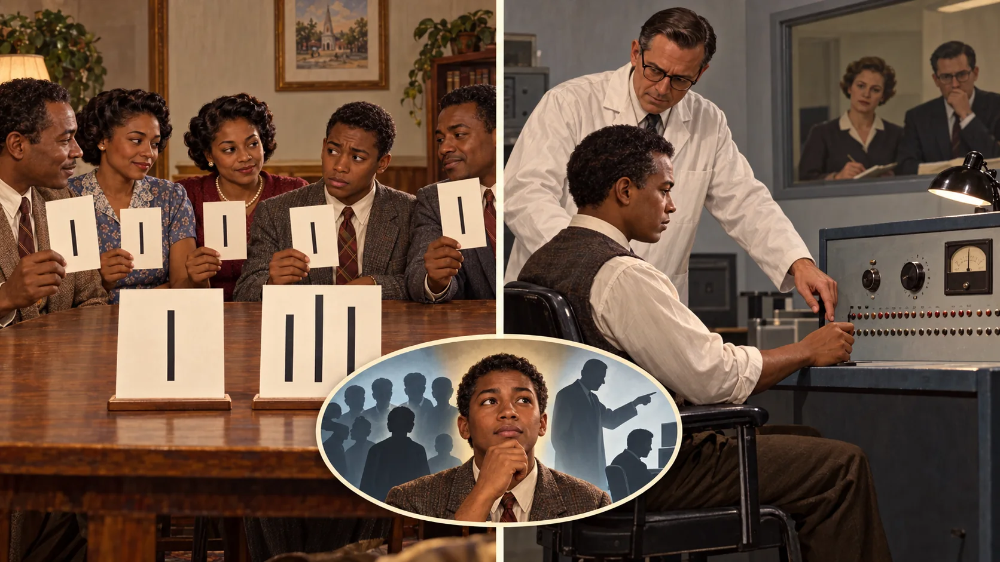
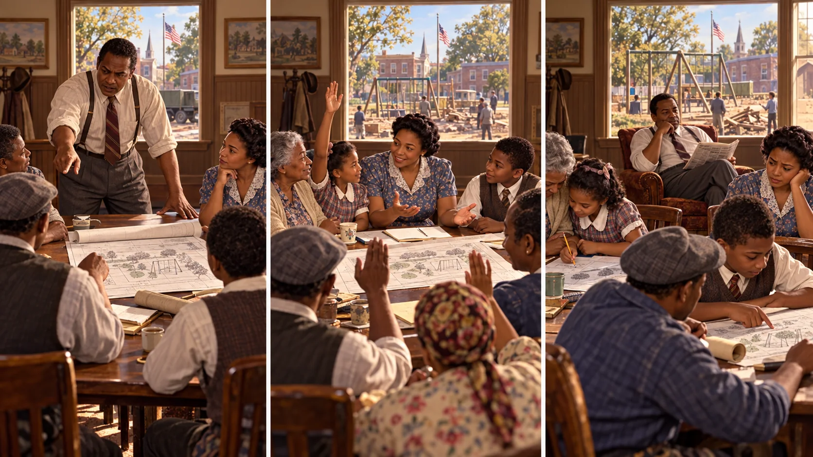
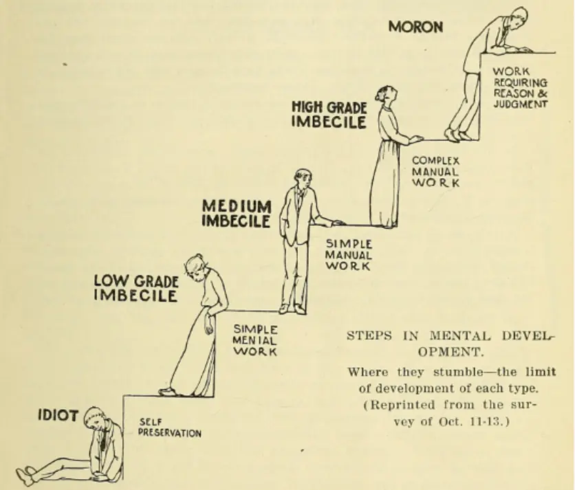
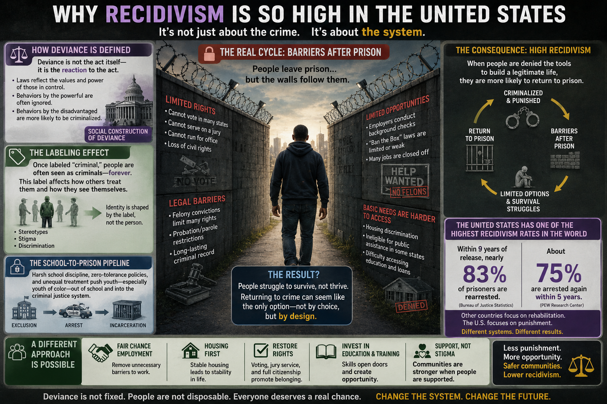
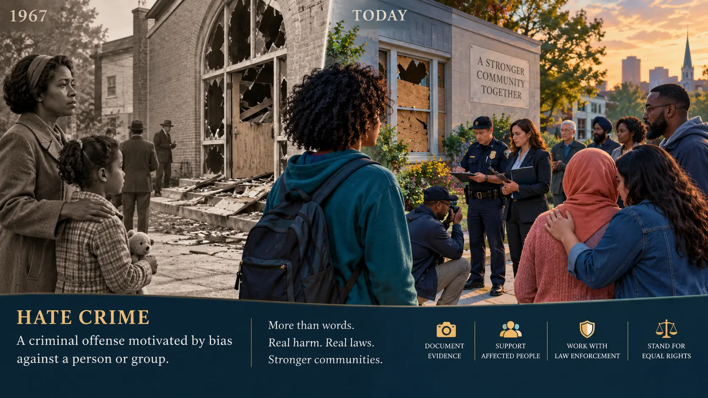
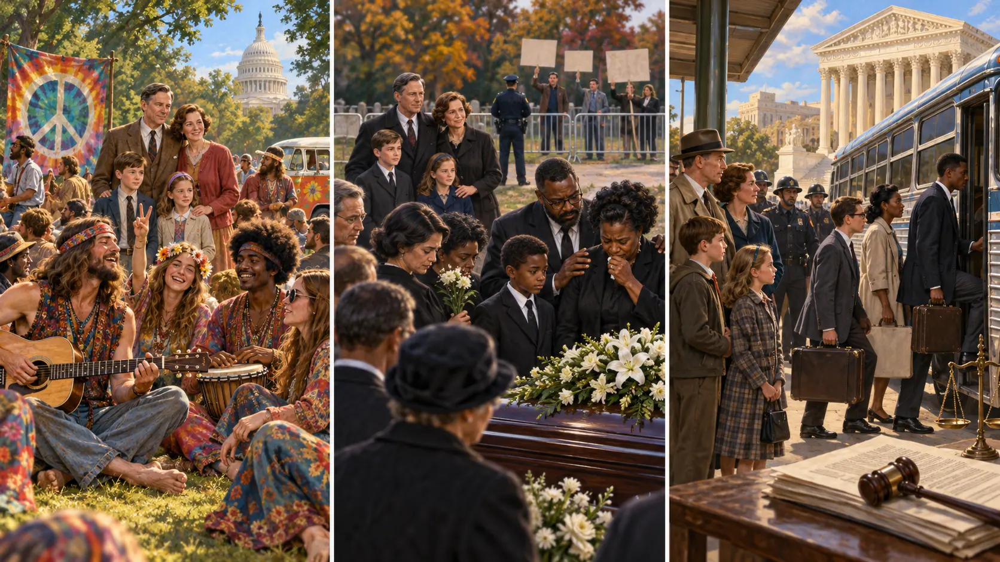
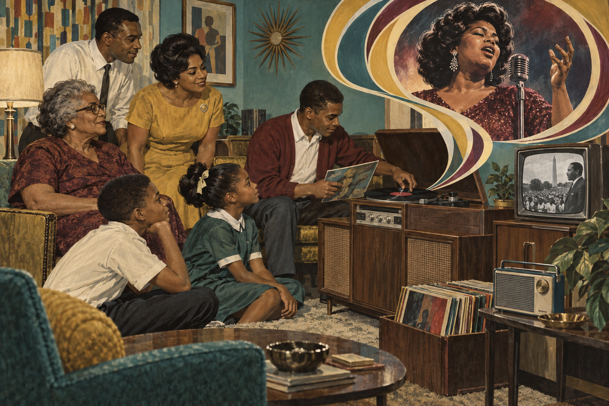

Analyze groups
Distinguish primary, secondary, in-, out-, and reference groups and explain group influence.
Who draws the line around “normal,” how groups enforce it, and why the line moves across time.
Distinguish primary, secondary, in-, out-, and reference groups and explain group influence.
Separate deviance, crime, harm, difference, and social reaction.
Use functionalist, strain, learning, control, labeling, conflict, and feminist explanations.
Compare informal and formal sanctions, law, medicalization, punishment, restoration, and prevention.
Eleanor is now eighty-eight. Beside her stands her granddaughter, who watches young people in unfamiliar clothing march against war and conventional authority. Some passersby call them unpatriotic or immoral; participants describe peace, authenticity, racial justice, women’s liberation, and freedom from conformity. Neither response exists in the clothing itself. Groups attach meanings, apply labels, and enforce boundaries.
A social group includes people who interact, share expectations, and recognize some form of membership. A crowd at a signal may be an aggregate; people placed in the same age category are a category. Neither necessarily forms a group until sustained relationships or a shared identity emerge.
| Group concept | Meaning | Example |
|---|---|---|
| Primary group | Close, enduring, emotionally significant relationships | Family members or intimate friends |
| Secondary group | More formal, impersonal, or goal-oriented relationships | A workplace team or course section |
| In-group | A “we” group that receives loyalty and belonging | Movement members who share identity |
| Out-group | A “they” group marked as different | A rival group portrayed as threatening |
| Reference group | A group used to judge one’s choices or achievements | A profession a student hopes to enter |

Eleanor’s family is a primary group, but a relative’s factory crew, church committee, college class, or civil-rights organization is usually a secondary group organized around a task. A young relative who studies the speech, dress, and credentials of nurses may use nurses as a reference group before entering the occupation. In 1967, supporters of a movement may describe themselves as “we” while depicting critics as “they”; the boundary can build solidarity and also encourage stereotyping.

Changing behavior or stated belief to align with group expectations. It may reflect agreement, belonging, fear of exclusion, or uncertainty.
Following a direct command from an authority. Authority is socially organized through roles, institutions, and legitimacy.
A decision pattern in which pressure for agreement suppresses criticism, alternatives, and warning signs.
Authoritarian leaders direct decisions; democratic leaders invite participation; laissez-faire leaders provide limited direction. Outcomes depend on the task, power, and group norms.
You conform because you believe the group may possess correct facts. The goal is to be right, especially when a situation is ambiguous, unfamiliar, urgent, or difficult to verify.
You conform to fit in, be liked, preserve membership, or avoid embarrassment and social rejection—even when you privately doubt the group.
Participants compared line lengths after confederates deliberately gave the same incorrect answer. Many remained independent, but the group sometimes changed a participant’s public response. A dissenting ally reduced conformity, showing why one voice can reopen judgment.
Adult participants assigned the “teacher” role believed they were administering escalating shocks while an experimenter urged them to continue. No real shocks were delivered. The study shows how institutional legitimacy, gradual escalation, divided responsibility, distance from consequences, and scripted commands can increase obedience—but it also recorded refusal.
Zimbardo used the Lucifer Effect to argue that ordinary people may participate in cruelty when systems define an enemy, dehumanize that group, authorize harmful roles, diffuse responsibility, normalize small boundary violations, and reward loyalty. These mechanisms can overlap with conformity, obedience, and groupthink.
On April 9, 2004, a caller pretending to be a police officer contacted a McDonald’s restaurant in Mount Washington, Kentucky. Employees were drawn into detaining, searching, and abusing an eighteen-year-old worker. The Kentucky Court of Appeals later described a pattern of hoax calls between 1994 and 2004 and found that the caller had successfully produced similar conduct more than thirty times at McDonald’s restaurants alone.
The case provides real-world support for several mechanisms identified in obedience research: an apparently legitimate authority, a familiar workplace hierarchy, urgency, isolation, gradual escalation, transferred responsibility, and a claim that other institutions had already approved the action. It does not prove that every person will obey or establish Milgram’s findings with 100% certainty. A real event is not a controlled replication.
Resistance is part of the evidence. One worker refused the caller’s directions, and a maintenance worker recognized that something was wrong; the process ended after the claimed authority was checked. Refusal may be labeled deviant in the immediate situation while functioning as ethical leadership for the larger group.
Stop: “I will not detain, search, touch, or punish anyone based on a phone call.”
Separate: End the caller’s control of the interaction; do not let the caller choose who may speak or what may be verified.
Verify independently: Call the agency through its publicly listed number—not a number supplied by the caller.
Protect and document: Keep the targeted person safe, preserve records, notify organizational leadership, and report impersonation.
Zimbardo later emphasized heroic imagination: learning to recognize situational pressure and imagine oneself taking ethical action before a crisis occurs. Heroism is not a permanent personality type or a fantasy of rescuing everyone. It is a choice in a particular situation to act for others despite meaningful social, occupational, physical, or reputational risk.
The heroic person may be the employee who says no, the coworker who calls the real police, the group member who asks for evidence, or the subordinate who documents an unlawful order. One dissenter can transform the situation by showing everyone else that refusal is possible.
Periods of rapid change produce uncertainty, cultural lag, weakened trust, and pressure to accept simple explanations. Extreme wealth concentration also gives a small share of society greater access to ownership, lobbying, expert services, media visibility, data, and agenda-setting. Federal Reserve data for 2026:Q1 show that the wealthiest 10% held roughly 87% of corporate equities and mutual-fund shares. That does not mean wealthy people think or act as one group, and stock ownership is not the same as total wealth. It does show that people do not enter public debate with equal capacity to amplify a message or shape an institution.
Authority deserves evaluation, not automatic hostility or automatic obedience. A title, fortune, badge, platform, credential, political office, or large audience may indicate access and influence; none independently proves that a claim is factual, lawful, ethical, or in the public interest. Sociology asks students to verify the authority’s jurisdiction, evidence, incentives, accountability, and effects on people with less power.
Constructive deviance means refusing an immediate expectation when compliance would violate evidence, safety, rights, or professional ethics. The goal is not rebellion for its own sake. It is accountable dissent: pause, verify, protect, document, seek allies, and use lawful channels whenever possible.
| Concept | 1967 example | Today |
|---|---|---|
| Traditional authority | The British monarchs of Eleanor’s lifetime inherit a role through custom and succession. | King Charles III occupies the monarchy through the same hereditary line, though constitutional rules limit political power. |
| Charismatic authority | Martin Luther King Jr. inspired commitment through moral vision, rhetoric, courage, and followers’ belief in the movement. | Activists, creators, founders, or religious figures may attract followers through perceived extraordinary qualities. Charisma depends on recognition and can fade or become routinized. |
| Rational-legal authority | John F. Kennedy’s lawful authority came from election and the presidency—not from family custom or personality. | Administrators, elected officials, judges, and regulators act through offices, written rules, jurisdiction, and procedures. |

| Style | Historical illustration | Strength and risk |
|---|---|---|
| Authoritarian | General George C. Marshall’s wartime chain of command illustrates centralized direction, though military leadership also involves consultation and expertise. | Can coordinate urgent action; can silence information and normalize obedience when unchecked. |
| Democratic | Ella Baker’s organizing emphasized participation, local knowledge, and developing others’ leadership. | Builds commitment and fuller information; may require more time and skillful facilitation. |
| Laissez-faire | A leader gives capable artists, scientists, or volunteers wide autonomy and intervenes little. | Can encourage creativity among skilled, motivated members; can become neglect when roles or support are unclear. |
A leader may perform either function—or both—regardless of decision-making style. For example, a democratic leader can organize deadlines instrumentally while also maintaining trust expressively.
| Function | Historical illustration | Contribution and possible limitation |
|---|---|---|
| Instrumental | A campaign coordinator sets schedules, resources, routes, and measurable tasks. | Keeps a group focused on completion; may overlook morale and relationships. |
| Expressive | A community or movement leader repairs conflict, recognizes grief, and sustains belonging. | Protects cohesion and emotional needs; may need an instrumental partner for complex logistics. |
Erving Goffman’s dramaturgical analysis compares interaction to theater. People are not necessarily dishonest; they organize signs so an audience can understand the situation and the identity being claimed.
The setting where a role is performed for an audience: a courtroom, classroom, customer counter, or public profile.
A region where performers prepare, repair mistakes, relax expectations, or discuss what the audience should not see.
Efforts to guide how others define us through words, appearance, setting, timing, props, and teams.
The enacted expectations attached to a status. Role conflict occurs between statuses; role strain occurs among demands within one status.
A performance also has a setting (the physical scene and props), appearance (signals of social status), and manner (signals of how the performer intends to act). Performance teams cooperate to sustain one definition of a situation, while audience segregation helps keep different audiences from seeing contradictory performances.
At a department-store counter, Eleanor straightens her clothing, softens frustration, and uses the expected customer-service vocabulary: a front-stage performance supported by the counter, register, uniform, and coworkers. In the stockroom, the team admits confusion, repairs mistakes, jokes, and prepares the next encounter: backstage work that makes the polished front possible. At home, Eleanor performs different roles as parent, spouse, neighbor, or adult child. None is automatically false. Each organizes a real part of the self for a particular audience.
Impression management becomes especially visible when performances fail: a forgotten name, a broken prop, an overheard backstage remark, or a modern screenshot that carries one audience’s message into another. Role performance is the behavior; impression management is the effort to shape how that behavior is interpreted.
A profile can be front stage, private messages can function as backstage, and a screenshot can collapse the boundary between them. Platforms change audiences: a post intended for friends may also reach family, employers, strangers, or automated systems.
Anthropologist Edward T. Hall used proxemics for the study of culturally patterned space. The ranges below are common U.S./North American teaching estimates—not universal rules. Culture, relationship, disability, sensory needs, crowding, safety, and personal preference all matter.
| Zone | Approximate distance | Common context |
|---|---|---|
| Intimate | 0–18 inches | Comforting, caregiving, affection, or close trusted contact |
| Personal | 1.5–4 feet | Friends and ordinary conversation |
| Social | 4–12 feet | Workplace, service, or formal interaction |
| Public | 12 feet and beyond | Lectures, performances, or public address |
Deviance is a recognized violation of a social norm. Crime is behavior prohibited by criminal law. Harmful acts may be legal; illegal acts may receive little condemnation; unusual identities may be stigmatized without harming anyone. Sociology asks what happened, which rule applied, who reacted, and how power shaped the outcome.
Social control includes the processes through which groups encourage conformity. A sanction is a social response to behavior. Sanctions can be positive or negative and formal or informal; “negative” describes disapproval, not necessarily moral correctness.
| Positive | Negative | |
|---|---|---|
| Informal | A smile, praise, gratitude, inclusion, or respect | A frown, gossip, ridicule, criticism, or exclusion |
| Formal | A diploma, promotion, award, license, or official recognition | A written warning, fine, suspension, revoked license, or legal sentence |
Goffman described stigma as an attribute that becomes deeply discrediting within a particular interaction. The attribute is not naturally shameful: audiences and institutions attach meaning to it. Stigma can produce a spoiled identity when others allow one characteristic to overwhelm every other status, skill, and relationship.
Body size, scarring, clothing, grooming, age, and visible difference may violate an audience’s expectation. In 1967, long hair, unconventional dress, or a woman rejecting restrictive beauty rules could invite a discrediting response even when no one was harmed.
Physical, sensory, intellectual, psychiatric, or communication differences become stigmatized when society treats one narrow body or mind as the standard. Barriers and exclusion are social arrangements—not evidence that a person lacks dignity, relationships, work, or a meaningful life.
Race, ethnicity, nationality, kinship, religion assigned by others, or association with a devalued group can become a master status. Prejudice supplies the stigma; membership does not justify it.
The audience already knows or can immediately perceive the stigmatized attribute. The interaction centers on managing tension and others’ responses.
The attribute is not known. The person must decide whether, when, and to whom to disclose it.
Passing conceals a discreditable attribute; covering reduces attention to a known one. Both can demand emotional labor.
Family, friends, or associates may also be judged because of their relationship with a stigmatized person.
A relative returning from treatment may be viewed only through a label, while their work, care, humor, and family roles disappear from view. Today, a searchable record or viral post can make a master status persist across audiences. A sociological response asks how hiring rules, school discipline, media, healthcare, and everyday interaction reproduce—or interrupt—the stigma.
Medicalization occurs when nonmedical problems or behaviors come to be defined and treated as medical conditions. The process can shift authority from families, religious leaders, schools, or courts toward clinicians, insurers, pharmaceutical companies, diagnostic manuals, and health systems. Demedicalization occurs when a condition is removed from medical classification or professional control.
At the beginning of Eleanor’s lifetime, reformers, physicians, officials, and eugenicists used the vague category feebleminded to sort people they judged intellectually, morally, economically, sexually, or socially “unfit.” Those judgments were shaped by class prejudice, racism, nativism, gender rules, disability stigma, and biased testing. Poor people, immigrants, racial minorities, women accused of sexual impropriety, and people with intellectual or psychiatric disabilities could be institutionalized, segregated, or sterilized. A medical-sounding label gave coercive policy the appearance of objective science.

Families sometimes hid disabled or mentally distressed children in secluded rooms to avoid stigma, while others were sent to asylums, “training schools,” state hospitals, or sanitariums. The popular phrase disappointment room can prompt discussion of family secrecy and shame, but it is not a well-established technical category in the historical record. Conditions and purposes varied, yet overcrowding, isolation, loss of liberty, neglect, and abuse became recurring institutional problems.
The Community Mental Health Act of 1963 funded community mental-health centers and reflected a shift away from long-term custodial institutions. It was an important change, but deinstitutionalization also required housing, income, outpatient care, crisis services, transportation, and family support. When institutions closed faster than community systems developed, many people encountered homelessness, emergency rooms, jails, long waiting lists, or families left without enough help. Community care works only when a community actually funds care.
Contemporary neurodiversity perspectives describe autism, ADHD, and other neurological differences as part of human variation while still recognizing that people may experience disability, distress, or need substantial support. A diagnosis can provide language, accommodations, treatment, and community; it can also become a stereotype if institutions treat a person as nothing more than a category. The sociological goal is not to choose between “difference” and “support,” but to ask what combination of acceptance, accessibility, autonomy, and individualized care allows people to flourish.
| Possible benefit | Possible concern | Sociological question |
|---|---|---|
| Reduces moral blame and validates distress | A social or political problem may be reduced to an individual diagnosis | What conditions in families, schools, work, media, or inequality contribute? |
| Creates access to treatment, accommodations, and research | Access may be unequal; treatment may be coerced or controlled by institutions | Who can obtain respectful care, and who is monitored or punished? |
| Offers a vocabulary for symptoms and support | Normal variation or difficult life experiences may be over-pathologized | Who defines the threshold, using what evidence and whose values? |
| Theoretical lens | Main question | Where it looks |
|---|---|---|
| Durkheim / functionalism | What does society’s response to deviance do? | Boundaries, solidarity, change, and anomie |
| Merton / strain | What happens when goals are stressed but legitimate means are unequal? | Social structure and five adaptations |
| Sutherland, Akers, and Becker / learning | How do people learn techniques, meanings, and rewards? | Close groups, models, reinforcement, and interpretation |
| Cloward and Ohlin / opportunity | Which legitimate and illegitimate paths are actually available? | Neighborhoods, organizations, networks, and access |
| Hirschi / social bond | What connects people to conventional society? | Attachment, commitment, involvement, and belief |
| Becker and Lemert / labeling | How does social reaction change identity and opportunity? | Labels, stigma, master status, and secondary deviance |
| Sykes and Matza / neutralization | How do people suspend rules they still generally accept? | Justifications that loosen moral restraint |
| Conflict and feminist theories | Whose rules, whose harm, and whose punishment? | Power, law, enforcement, gender, race, and class |
Durkheim argued that deviance is normal in the statistical and sociological sense: no complex society eliminates every rule violation. Collective responses clarify moral boundaries and can strengthen social solidarity. Deviance may also make change imaginable when yesterday’s condemned challenge becomes tomorrow’s reform.
Reaction identifies what a group considers acceptable. A rule often becomes most visible when someone crosses it.
Shared outrage or collective response can create a temporary feeling of “we.” The same process can also exclude an out-group.
Some rule breakers expose an unjust norm. Conduct condemned in one era may later become protected, ordinary, or admired.
Rapid change can weaken or confuse shared rules. When expectations are unclear, people may feel disconnected and regulation becomes less predictable.
Eleanor’s era: Public condemnation of a 1960s protest could unite opponents, while the movement’s symbols united participants. If the protest helped change an unjust rule, deviance also contributed to adaptation. Today: a viral controversy can produce the same boundary-setting process much faster, with several audiences enforcing different norms at once.
What this theory does not claim: “Functional” does not mean good, fair, or harmless. A punishment may unite one group while traumatizing another. Functionalism explains consequences for social order; it does not settle the moral question.
Robert Merton argued that strain develops when a culture strongly promotes goals but legitimate means are unequally available.
The mechanism is not simply frustration. Society teaches people to desire culturally approved goals—such as economic success, security, status, or achievement—while schools, jobs, transportation, discrimination, family wealth, and neighborhood resources distribute the approved means unevenly. The pressure lies in the gap between cultural goals and institutionalized means.
Accept goals and approved means: pursue success through education and work.
Accept goals but use prohibited means: seek wealth through fraud.
Lower or abandon the goal but continue the approved routine.
Reject both dominant goals and institutionalized means.
Replace existing goals and means with alternatives—especially relevant to countercultures.
Eleanor’s era: two equally ambitious relatives in 1967 might face very different educational and occupational doors because of race, gender, class, or location. Today: social media can make the success goal constantly visible while housing, tuition, hiring networks, and inherited wealth remain unequal.
Limit: The theory explains structurally patterned pressure better than every individual act and should not be reduced to poverty “causing” crime.
In Merton’s model, rebellion rejects and replaces both the dominant goals and approved means. A reform movement proposing a different definition of success and a different institutional system fits better than a person who simply violates one rule.
People learn motives, techniques, rationalizations, and definitions favorable or unfavorable to rule violation through interaction. Influence varies by frequency, duration, priority, and intensity. The theory explains why behavior clusters in networks without claiming that association makes action automatic.
Sutherland’s key idea: learning includes more than copying an act. Groups communicate definitions favorable or unfavorable to rule violation—statements such as “this rule is unfair,” “everyone does it,” or “people like us do not do that.” A person becomes more likely to violate a rule when favorable definitions outweigh unfavorable ones.
The most influential associations tend to be frequent, long-lasting, early or important in the person’s development, and emotionally significant. This is why a trusted primary group can matter more than a distant public message.
Application: A peer network might teach protest tactics, workplace fraud, or online harassment. The content differs, but learning occurs through trusted relationships. Limit: It is difficult to measure precisely which definitions outweigh others.
Social learning theory builds on Sutherland through four connected processes: differential association exposes a person to groups; definitions supply meanings and justifications; imitation supplies a model; and differential reinforcement rewards or discourages the behavior.
Reinforcement may be direct—money, praise, belonging, excitement, or relief—or indirect when a person watches someone else gain status. Punishment matters only as it is perceived: a distant legal penalty may carry less weight than immediate peer approval.
Application: a group can teach how to obtain and use a substance, how to recognize an effect, and how to interpret the experience. The same sequence applies to cheating, online harassment, occupational misconduct, political protest, or conformity.
Limit: exposure does not make behavior inevitable, and reinforcement patterns occur inside larger structures of opportunity and power.
Howard Becker’s study of marijuana use among jazz musicians showed that even a bodily experience is interpreted socially. Novices learned a technique, learned to perceive effects, and learned to define those effects as pleasurable. More broadly, groups teach people what an experience means.
Apply beyond drugs: a new group member may initially find a ritual, slang term, style of music, or risky activity confusing. Experienced members provide categories and reactions that make the experience understandable and sometimes desirable.
Limit: Becker’s process explains acquired meaning; it does not imply that every effect is socially invented or that all people respond identically.
Blocked legitimate opportunity does not automatically produce the same adaptation everywhere. Cloward and Ohlin argued that access to illegitimate means is also socially organized. Some communities or organizations provide networks, mentors, roles, markets, and protection for particular forms of rule breaking; others do not.
Three classic adaptations: a criminal subculture develops where organized illegal opportunities and adult models are available; a conflict subculture may form where both legitimate and stable illegitimate structures are weak and status is won through toughness; a retreatist subculture involves withdrawal after failure in both systems. These are structural patterns, not labels to place on an entire neighborhood.
Application: corporate fraud requires occupational access, specialized knowledge, and organizational protection, just as an illicit street market requires contacts and local opportunity. Limit: opportunity explains availability, not every person’s choice, and the original typology should be applied carefully to changing communities.
Control theory reverses the question: when opportunities for rule breaking exist, what bonds restrain action? Hirschi emphasized attachment to others, commitment to conventional goals, involvement in conventional activity, and belief in rules.
| Bond | What it means | Family and real-life application |
|---|---|---|
| Attachment | Caring about relationships and others’ opinions | A child considers how an action could affect a trusted parent, mentor, or friend. |
| Commitment | Investment in conventional goals | Education, employment, reputation, and future plans create something to lose. |
| Involvement | Time and energy in conventional activities | Family responsibilities, work, clubs, arts, sports, or service structure time and belonging. |
| Belief | Acceptance that shared rules have legitimacy | Adults explain why a rule protects others rather than demanding obedience without meaning. |
Application: A person may avoid misconduct because it would harm a valued relationship or future. Limit: Strong bonds can also exist inside groups that teach harmful norms.
Primary deviance is an initial violation that may not reshape identity. Public reaction can produce secondary deviance when a person internalizes or is repeatedly treated through the label. A master status overwhelms other identities, and exclusion can close conventional opportunities.
Lemert’s distinction: primary deviance is the initial act and may be temporary or unnoticed. Secondary deviance develops through the person’s response to social reaction. Becker’s question is not only “Why did someone act?” but “Who successfully applies the rule and label to whom?”
Application: Calling a teenager “trouble” may change how teachers, peers, and the teenager interpret later behavior. Limit: Labeling explains consequences of reaction more directly than the original act and must not erase accountability or harm.
Family and institutional application: correct conduct without turning the conduct into the child’s identity. “That choice caused harm; let us repair it” leaves more room for change than “you are bad.” Schools, courts, media, and digital records can either intensify a master status or create routes for reintegration.
Conflict theories examine how powerful groups shape law, surveillance, and definitions of respectability. Similar acts may receive different labels depending on race, class, gender, place, organizational status, or political influence.
The mechanism is unequal rule-making and enforcement. Powerful groups may define their preferred conduct as respectable, direct surveillance toward less powerful groups, and possess attorneys, organizational resources, or political access that soften consequences. Conflict theory also studies harmful conduct that remains legal or weakly enforced.
Application: Compare wage theft, street theft, corporate harm, and protest policing: which receives visibility, resources, and punishment? Limit: Power is central, but not every norm is only an elite conspiracy; communities also build rules through negotiation and shared need.
Feminist theories ask how gendered power shapes which conduct is controlled, whose victimization is believed, and how institutions regulate bodies and sexuality. Intersectionality examines how gender works with race, class, sexuality, disability, and other positions.
Intersectional mechanism: institutions do not react to gender, race, class, sexuality, age, or disability one at a time. The combination can affect who is watched, believed, protected, treated, or punished. Feminist theories also expose the historical tendency to regulate women’s bodies while minimizing violence committed against them.
Application: A behavior praised as assertive in one person may be labeled aggressive in another. Limit: “Women” or “men” are not uniform groups; analysis must examine institutional context and intersecting power.
Sykes and Matza described rationalizations that loosen moral restraint: denying responsibility, injury, or the victim; condemning the condemners; and appealing to higher loyalties. These techniques help people violate a rule while preserving a nondeviant self-image.
| Technique | Typical reasoning | Question that tests it |
|---|---|---|
| Denial of responsibility | “I had no choice.” | What choices or pressures actually existed? |
| Denial of injury | “No one was hurt.” | Which direct, delayed, or collective harms are being ignored? |
| Denial of the victim | “They deserved it.” | How is the target being dehumanized or blamed? |
| Condemnation of condemners | “The people judging me are worse.” | Does another person’s hypocrisy erase this action? |
| Appeal to higher loyalties | “I did it for my group.” | Why should loyalty cancel responsibility to others? |
Apply: “Everyone does it,” “no one was hurt,” and “I did it for my group” are clues to analyze—not proof that an act is harmless.
Case: A teenager joins friends in damaging a vacant building. Select a lens to change the question—not the facts.
Sociology separates the legal definition of an offense from its social organization: who has access to the opportunity, who is harmed, who is watched, who can conceal conduct, and what happens after an official label is applied.
Recidivism means renewed criminal behavior after a previous sanction or intervention, but studies operationalize it differently. Rearrest, reconviction, and return to prison are not interchangeable. A return may follow a new sentence or a supervision violation; an arrest does not establish guilt. Rates also change with the population, release year, jurisdiction, and follow-up period.

Read the denominator: These Bureau of Justice Statistics findings follow people released from state prisons in 34 states in 2012. They are not a single timeless “recidivism rate.”
A record, licensing rule, skill gap, or employer screen can close legitimate routes to income. Strain and opportunity theories ask what alternatives remain.
Instability, eligibility restrictions, distance, and unreliable transportation can disrupt work, treatment, and supervision.
Interrupted treatment, trauma, substance-use disorder, and weak continuity of care may increase risk. Support makes accountable change more realistic.
Stigma can create a master status, while family ties, mentors, work, and community participation create stakes in conformity.
More surveillance can detect more violations. A technical violation and a new serious offense should not be treated as the same outcome.
People return to unequal labor markets, services, peer networks, and exposure to violence. Place organizes legitimate and illegitimate opportunities.
Rearrest measures police contact and alleged conduct as well as enforcement. Reconviction requires a later adjudication but may miss conduct never detected or prosecuted. Return to prison can include a new sentence or supervision violation. A fair program comparison must use the same definition, time period, and eligible population for both groups.
White-collar crime generally refers to financially motivated, usually nonviolent crime committed through occupational or organizational access. Occupational crime benefits an individual through a work role, such as embezzlement, insider trading, bribery, or professional fraud. Corporate crime benefits a corporation or occurs through corporate policy, such as knowingly concealing unsafe products, price fixing, environmental violations, or systematic billing fraud.
| Feature | Street offense | White-collar or corporate offense |
|---|---|---|
| Opportunity | Access to a person or property | Access to accounts, contracts, data, or authority |
| Visibility | Often immediate and geographically visible | May be hidden in documents, code, billing, or dispersed decisions |
| Harm | May concentrate on an identifiable victim | May spread losses or risks across workers, consumers, taxpayers, or environments |
| Response | Police, courts, neighborhood fear, news | Audits, regulators, civil settlements, professional discipline, or prosecution |

For FBI reporting, a hate crime is a committed criminal offense motivated in whole or in part by bias against race, religion, disability, sexual orientation, ethnicity, gender, or gender identity. The offender’s perception can be mistaken; motivation still matters. Hate itself is not a crime, and offensive speech alone is not automatically criminal. Investigators must establish an underlying offense and evidence of bias while protecting constitutional expression.
Injury, damaged property, fear, trauma, financial loss, and disruption.
The offense may tell an entire category that its members are unsafe or do not belong.
Support, reporting, careful evidence, solidarity, repair, and fair investigation resist isolation.
Reported totals depend on victim reporting, agency participation, classification, and evidence. Reported incidents are not all incidents.
An offensive opinion without an underlying offense is not, by itself, a hate crime. Property damage without bias evidence may be a crime but not a hate crime. Property damage accompanied by reliable evidence of bias motivation may meet the definition. If the offender mistakes the victim’s identity, the bias motivation may still qualify.
Eleanor-family connection: Grace learns that a young person’s vandalism, an executive’s fraud, and an attack intended to terrorize a social group involve different opportunities, harms, evidence, and institutional responses—even though strain, learning, labels, power, and social bonds can illuminate all three.
A peaceful counterculture may challenge dominant values to widen freedom. A hate group may use dehumanization or intimidation to organize hierarchy and exclusion. Both can be called “deviant” relative to a particular norm, but the shared label does not make their goals, power, methods, or harms morally equivalent.
Rejected aspects of consumerism, war, conventional sexuality, dress, and authority. Participants varied widely; the label covered peaceful activism, art, communal experiments, spiritual searching, and sometimes risky practices.
Its funeral picketing used deliberately offensive anti-LGBTQ+ messages to provoke attention. The case shows that conduct can be legal and socially condemned at the same time.
Governments enacted time, place, and manner restrictions around funerals. The federal Respect for America’s Fallen Heroes Act addressed demonstrations near national-cemetery funerals.

In 1961, interracial Freedom Riders rode interstate buses through the South to challenge segregated terminals and the failure to enforce federal rulings. They faced arrest and mob violence even though segregation—not interracial travel—was the deeper injustice. Their actions show why “deviant” cannot mean “immoral”: a group with legal and political power may formalize an unequal norm, while disciplined rule breaking can reveal the contradiction between law, rights, and practice.
A symbol has power because groups teach its history, use, and boundaries. Peace signs helped participants recognize a movement. Hate symbols can create in-group solidarity while intimidating targeted out-groups. Context, history, orientation, color, accompanying signs, location, and behavior matter: a shape alone is not proof of intent.
The Southern Poverty Law Center Hate Map is a current advocacy organization’s research tool for exploring groups it classifies as hate and antigovernment extremist groups. Treat the map as a sourced dataset with definitions and methods—not as an official government census, and not as proof about every individual near a mapped location.
A society cannot change if everyone always follows its existing rules. People who challenge slavery, unequal citizenship, or authoritarian rule may be labeled dangerous or deviant by those defending the established order. Yet challenging an unjust system does not automatically produce a just replacement.
Deviance means violating a social norm; it does not establish whether an action is beneficial or harmful. Durkheim argued that deviance can help a society reconsider its moral boundaries. In Merton’s strain framework, rebellion involves rejecting and replacing established cultural goals and institutional means. This differs from innovation, which pursues existing goals through disapproved means. Rebellion describes an orientation toward changing the social order, not an automatic endorsement of violence (Durkheim, 1895/1982; Merton, 1938).
Social movements organize sustained collective efforts to promote or resist change. They can use education, mutual aid, protest, civil disobedience, elections, or other strategies. Civil disobedience involves a deliberate, public, nonviolent violation of a law to challenge injustice. Reform seeks changes within a system; revolution seeks a more fundamental transformation of political authority and social arrangements. These strategies and outcomes should not be treated as interchangeable.
These comparisons highlight questions for sociological analysis; they do not suggest that the three revolutions had identical causes or outcomes. Revolutions unfold through institutions, conflicts, and material conditions as well as individual leaders (Skocpol, 1979).
| Historical case | Challenge and promise | Change and continuing inequality | Sociological question |
|---|---|---|---|
| American Revolution (1775–1783) | Colonists challenged British authority and advanced claims about liberty and representative government. | Independence created a republic, while slavery continued, Indigenous peoples faced dispossession, and women lacked equal political rights. | Who counted as part of “the people,” and who was excluded from the promised freedom? |
| French Revolution (beginning in 1789) | Revolutionaries challenged monarchy and inherited privilege through claims of liberty and equality. | Feudal privileges were attacked and citizenship redefined, but revolutionary repression and Napoleon’s later authoritarian rule complicated those promises. | How can emergency authority and claims to defend a revolution weaken accountability? |
| Russian Revolutions (1917) | Different revolutionary groups challenged tsarist rule and advanced competing visions of political freedom, peace, land, and economic equality. | The monarchy fell. Following the Bolshevik seizure of power and civil war, one-party rule consolidated; under Stalin, repression and concentrated authority expanded. | Does replacing an elite change ordinary people’s power to challenge those who govern? |
Historical context: Wood (1992), Doyle (2001), and Fitzpatrick (2017). The American case does not follow the same path as the French and Russian cases: independence, political exclusion, empire, and one-party dictatorship are distinct developments.
Conflict theory directs attention to control over wealth, law, information, and coercion. Removing a ruler may leave unequal ownership, organizational hierarchies, or exclusion intact. Leaders can also gain new advantages through their positions. Michels’s iron law of oligarchy describes the tendency for leadership power to concentrate in large organizations, including organizations committed to democracy. Specialized knowledge, control of communication, and members’ dependence on leaders can make leadership difficult to challenge (Michels, 1915).
Who controls employment, land, public funds, and essential services? Can people disagree without losing their livelihood?
Can members inspect decisions and question official accounts? Can independent journalists, researchers, and critics investigate?
Do rules apply to leaders and supporters as well as opponents? Who reviews punishment and hears appeals?
Can leaders be removed peacefully? Are offices temporary, and can competing groups organize?
A movement promises equal access to housing. After winning power, its leaders give their own supporters priority and call public criticism disloyal.
Compare your reasoning: Labeling criticism disloyal can discourage dissent through informal sanctions. Preferential housing access reproduces unequal power. Publishing criteria helps, but accountability also requires an independent body with authority to investigate, offer appeals, and correct decisions.
Ideal Society connection: A good society needs ways to revise unfair rules and ways to prevent reformers from becoming an unaccountable elite. On your Section Three slide, identify one rule people may legitimately challenge and one concrete way residents can hold rule makers accountable.

Aretha Franklin’s 1967 recording of “Respect,” written and first recorded by Otis Redding, became more than a successful cover. Performance, historical context, and audience interpretation helped turn its demand for recognition into a symbol associated with Black freedom, women’s autonomy, and dignity.
Listen and observe: notice vocal emphasis, repetition, call-and-response, gesture, and audience reaction. How do performance and collective response expand a song’s meaning beyond its original words? Students who cannot stream the performance can complete the analysis using the description above.
Meaning does not sit permanently inside lyrics. Performers and audiences redefine a song through voice, setting, gesture, and shared events.
Asking who receives respect exposes unequal power by race, gender, work, and ownership in both households and cultural industries.
A public demand that challenges gender or racial expectations may be labeled improper before it becomes part of a new norm.
Identify the creator, performer, industry gatekeepers, intended audience, and later audiences. Then explain whether the song reinforces solidarity, challenges power, changes a label, or does all three.
Slide requirements: Approximately 100–150 words, at least four bold concepts, one purposeful visual, and approximately 3–6 APA in-text citations.
Use the theory lab to compare how theories explain the same case. It contains clickable medicalization, differential association, labeling, neutralization, strain, social bond, opportunity, conflict, and crime-type activities. The mini-chapter offers additional group and dramaturgy practice.
Doyle, W. (2001). The French Revolution: A very short introduction. Oxford University Press.
Fitzpatrick, S. (2017). The Russian Revolution (4th ed.). Oxford University Press.
Michels, R. (1915). Political parties: A sociological study of the oligarchical tendencies of modern democracy (E. Paul & C. Paul, Trans.). Hearst’s International Library.
Skocpol, T. (1979). States and social revolutions: A comparative analysis of France, Russia, and China. Cambridge University Press.
Wood, G. S. (1992). The radicalism of the American Revolution. Alfred A. Knopf.
Asch, S. E. (1956). Studies of independence and conformity: I. A minority of one against a unanimous majority. Psychological Monographs: General and Applied, 70(9), 1–70. https://doi.org/10.1037/h0093718
Janis, I. L. (1982). Groupthink: Psychological studies of policy decisions and fiascoes (2nd ed.). Houghton Mifflin.
Milgram, S. (1963). Behavioral study of obedience. Journal of Abnormal and Social Psychology, 67(4), 371–378. https://doi.org/10.1037/h0040525
Le Texier, T. (2019). Debunking the Stanford Prison Experiment. American Psychologist, 74(7), 823–839. https://doi.org/10.1037/amp0000401
McDonald’s Corp. v. Ogborn, 309 S.W.3d 274 (Ky. Ct. App. 2009).
Federal Reserve Board. (2026). Distributional Financial Accounts: Compare wealth components across groups, 2026:Q1. https://www.federalreserve.gov/releases/z1/dataviz/dfa/compare/chart/
Franco, Z. E., & Zimbardo, P. G. (2006). The banality of heroism. Greater Good, 3(2), 30–35.
Zimbardo, P. G. (2007). The Lucifer effect: Understanding how good people turn evil. Random House.
Weber, M. (1978). Economy and society: An outline of interpretive sociology (G. Roth & C. Wittich, Eds.). University of California Press. (Original work published 1922)
Durkheim, E. (1982). The rules of sociological method (W. D. Halls, Trans.). Free Press. (Original work published 1895)
Goffman, E. (1959). The presentation of self in everyday life. Doubleday.
Goffman, E. (1963). Stigma: Notes on the management of spoiled identity. Prentice-Hall.
Hall, E. T. (1966). The hidden dimension. Doubleday.
Conrad, P. (2007). The medicalization of society: On the transformation of human conditions into treatable disorders. Johns Hopkins University Press.
Virginia State Board of Charities and Corrections. (1915). Mental defectives in Virginia: A special report of the State Board of Charities and Corrections to the General Assembly of 1916.
Community Mental Health Centers Act, Pub. L. No. 88-164, 77 Stat. 282 (1963).
United States Holocaust Memorial Museum. (2025, April 16). History of the swastika. https://encyclopedia.ushmm.org/content/en/article/history-of-the-swastika
National Park Service. (n.d.). Freedom Riders National Monument. https://www.nps.gov/frri/
Merton, R. K. (1938). Social structure and anomie. American Sociological Review, 3(5), 672–682.
Sutherland, E. H. (1947). Principles of criminology (4th ed.). J. B. Lippincott.
Sumner, W. G. (1906). Folkways. Ginn.
Merton, R. K. (1968). Social theory and social structure (Enlarged ed.). Free Press.
Sykes, G. M., & Matza, D. (1957). Techniques of neutralization: A theory of delinquency. American Sociological Review, 22(6), 664–670.
Hirschi, T. (1969). Causes of delinquency. University of California Press.
Akers, R. L. (1998). Social learning and social structure: A general theory of crime and deviance. Northeastern University Press.
Becker, H. S. (1953). Becoming a marihuana user. American Journal of Sociology, 59(3), 235–242.
Becker, H. S. (1963). Outsiders: Studies in the sociology of deviance. Free Press.
Cloward, R. A., & Ohlin, L. E. (1960). Delinquency and opportunity: A theory of delinquent gangs. Free Press.
Lemert, E. M. (1951). Social pathology. McGraw-Hill.
Bureau of Justice Statistics. (2021). Recidivism of prisoners released in 34 states in 2012: A 5-year follow-up period (2012–2017). U.S. Department of Justice. https://bjs.ojp.gov/library/publications/recidivism-prisoners-released-34-states-2012-5-year-follow-period-2012-2017
Federal Bureau of Investigation. (n.d.). Hate crime statistics. https://www.fbi.gov/how-we-can-help-you/more-fbi-services-and-information/ucr/hate-crime
National Institute of Justice. (n.d.). Recidivism. U.S. Department of Justice. https://nij.ojp.gov/topics/corrections/recidivism
Sutherland, E. H. (1940). White-collar criminality. American Sociological Review, 5(1), 1–12.
United States Supreme Court. (2011). Snyder v. Phelps, 562 U.S. 443.
This section builds transferable skills for analyzing groups, authority, conformity, deviance, stigma, social control, unequal enforcement, and the consequences of labeling.
| College pathway | Section benefit | At work |
|---|---|---|
| 🍎 Education | Recognize peer groups, conformity, labels, sanctions, stigma, and social bonds. | Build belonging, protect constructive dissent, and prevent a disciplinary label from becoming a student’s master status. |
| 🩺 Medical and nursing | Analyze stigma, medicalization, authority, unequal access, and person-centered definitions of health. | Distinguish care from social control and avoid reducing a patient to a diagnosis, behavior, or social label. |
| 🤲 Caregiving and human services | Connect stigma, group membership, social bonds, opportunity, labeling, and reintegration. | Support accountability, safety, and restoration without reducing a person to one action or imposed identity. |
| 🧠 Counseling and behavioral health | Understand how norms, stigma, labels, medicalization, groups, and institutions shape identity and help-seeking. | Use person-first, context-sensitive support while examining how social reactions may intensify isolation or secondary deviance. |
| 🦷 Rehabilitation and dental | Recognize appearance, ability, communication, and involuntary-membership stigma. | Protect dignity, reduce status differences, and create care environments where people can participate without shame. |
| 🚒 Public safety | Evaluate law, authority, sanctions, social control, group dynamics, and unequal enforcement. | Look beyond arrest counts, apply rules consistently, preserve lawful dissent, and assess whether interventions reduce harm. |
| 🔧 Skilled trades | Recognize occupational groups, informal norms, authority, sanctions, conformity, and workplace stigma. | Use the ideas when entering homes, explaining options, mentoring coworkers, resolving conflict, and serving diverse customers. |
| ✂️ Personal-care services | Understand impression management, appearance norms, stigma, boundaries, and the power of informal labels. | Use the ideas to maintain consent and boundaries, read client needs, avoid bias, and create a respectful environment. |
| 🔬 STEM | Connect networks, technology, surveillance, classification, group power, and unequal consequences. | Use the ideas to ask better questions and design research, data, products, systems, and teams for real human diversity. |